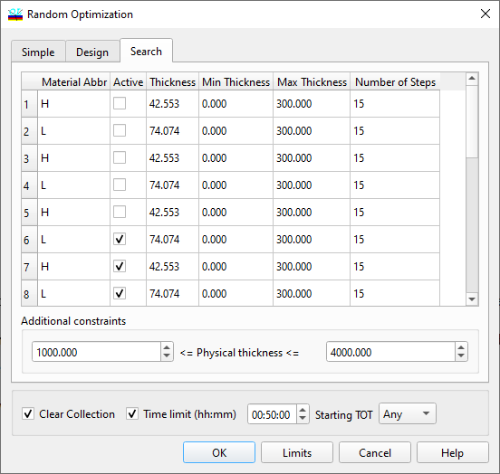

Exhaustive Search option
Exhaustive Search option
Navigation: OptiLayer Menu Commands > Synthesis Menu > Random Optimization >
Exhaustive Search option
` <idh_random_optimization_parame.html>`__ ` <idh_random_optimization.html>`__ ` <limits_generator.html>`__
The exhaustive search option is a deterministic procedure, not random, which is very straightforward and has been known for a long time. Nevertheless, it is convenient to launch this search using the same Random Optimization Parameters dialog, as the settings are quite similar.

Exhaustive Search procedure performs the analysis of the Merit Function considering all designs in the specified hypercube in accordance with the dialog settings. On modern computers, up to several dozen million combinations (shown at the top) are acceptable. Each of the selected (Active) layer thicknesses is changed from the minimum (Th.Min) to the maximum (Th.Max) value with the specified step (N of Steps). The Merit Function of each design is calculated, and the best designs are placed in the Collection.
The Exhaustive Search procedure could be significantly accelerated with reasonable specifications of the expected Physical or Optical thickness, or QWOT, or FWOT. The “Limits…” button opens an additional Limits Generator dialog to invoke recalculation of upper and lower constraints for layer thicknesses (Th.Min and Th.Max columns). It is possible to Clear Collection on restart and limit computational time with Time Limit settings.